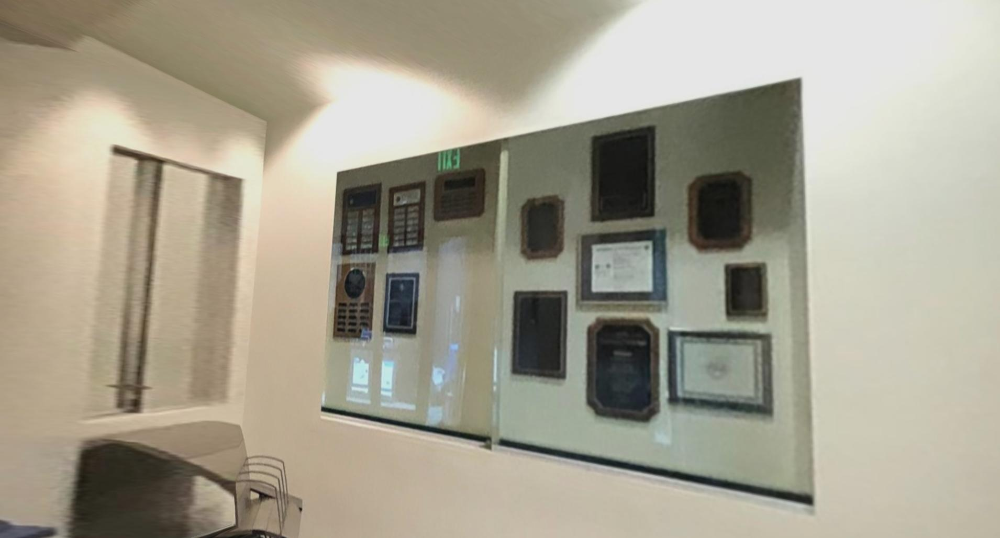

CS 194-26 Final Project (canned)
thank god
Canned Project A: Poor man's augmented reality
Input video
I didn't have a shoebox so I printed out a checkerboard pattern and hand-made a cube with scissors.
Keypoints
I hand-labeled these using ginput. Then, I propogated the keypoints using the CSRT tracker as I found this worked the best for my video.
| Here's my labeled points (click on the image for fullsize) |
| Here's the points propogating through an image. |
{kind=link}
Camera calibration
We setup the 3x4 camera matrix problem as shown below. Note that we fix m_34 to 1 to sufficiently constrain the least squares problem as formualted below. (it works ok)
Projecting a cube into the scene
Below is the projected axes and projected cube. I had to reorder the rendering order a little to fix occlusion.
| Here's my labeled points (click on the image for fullsize) |
| Here's the cube! |
Summary for project A
Overall, it works. I was tempted to do something with pyrender, but pyrender is disproportionately annoying to use.
Project B: Tour into the Picture
Input images
I took some pictures around Cory and Soda. Admittedly, the images aren't exactly to assumptions, but it's the best I could do.

|
||
| soda hall | cory basement | cory second floor |
{kind=link}
{kind=link}
Novel viewpoints
For these viewpoints, I basically hand-guessed depths for the image that seemed decent by editing config files for each image, after picking a back wall and a vanishing point.
I used pyrender to create an inner box to render all the image panels onto, and then used it as a 3d viewer to take screencaps with. Surprisingly, this was pure pain.
I had to hand-craft a trimesh of the inner box. Did you know that the Y axis goes upwards in 3d coordinates? I didn't realize that at first.
Mapping the uv coordinates from a generated image texture of the walls to the room mesh was also "fun." I found it most useful to create four individual box vertices per wall even though some vertices were in the same spot, to map different corners of the stitched and projected image onto, as the uv coordinate pairs we pass into pyrender/trimesh correspond to specific vertices at the same list index.
The uv coordinates corresponding to a point in the texture are scaled from 0.0 to 1.0 where u is positive x from the left side of the image to the right of the image, while v is positive y from the bottom edge the image to the top edge, the reverse of most image indexing conventions up to this point. This was infuriating to figure out, since I was basically crash coursing 3d rendering from scratch.
| A uv mesh for the sjerome sample image. |
{kind=link}

|
||
|  | ||
| soda hall | cory basement | cory second floor |
{kind=link}
{kind=link}
{kind=link}
{kind=link}
{kind=link}
Bells and whistles
Rewriting the starter code
Included in the project submission is a port of the original tip_gui starter code in the file tip_gui.py. There are some small off-by-one differences (due to differences in indexing) but it's usable.
In particular, the code first has you select the back wall and a vanishing point, and lets you re-pick the vanishing point until you don't select points in ginput by pressing middle click to confirm by visualizing where the box edges lie and how they converge on the vanishing point.

|
3D camera tour video
I also rendered a time-varying 3d camera path with pyrender, with the non-interactive renderer and skvideo.io. This part is actually pretty cool! And I used the reference images which look a lot better than my terrible and grainy references.
oh my god it's FINALLY over